Internship
Reasearch projects are available at any time, for quebecois students, canadian, french Master 1 and 2 or other foreigners.
Anyone who is interested in the physical phenomena of condensed matter, motivated to learn and to develop new experimental techniques and who is both curious and ressourceful is encouraged to apply. International candidates are welcome!
Former interns
Prosper Reulet
Université de Sherbrooke
Summer 2018
Léa Chibani
Université de Paris Sud
Summer 2018
Pierre Lefloïc
Université de Sherbrooke
Winter 2018
Pierre Lefloïc
Université de Sherbrooke
Summer 2017
Étienne Lefrançois
Université de Sherbrooke
Summer 2017
Étienne Lefrançois
Université de Sherbrooke
Fall 2016
Victor Zatko
Université de Paris Sud
Summer 2016
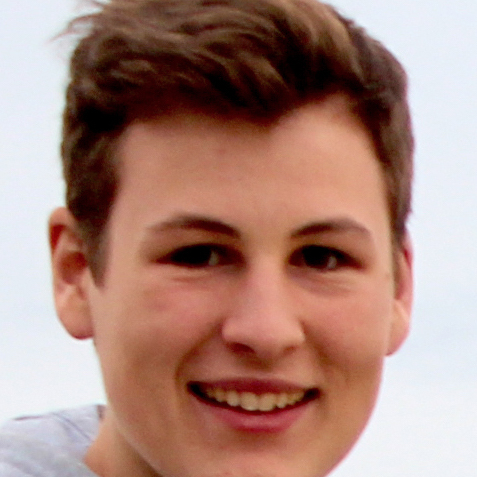
Alexandre Choquette
Université de Sherbrooke
Winter 2016
Michael Caouette-Mansou
Université de Sherbrooke
Summer 2014
Loïc Lequellec
Université Paris Sud
Summer 2014
Bastien Michon
Université Joseph Fourier (Grenoble)
Winter 2014
Maxime Lapointe-Major
Université de Sherbrooke
Fall 2013
Alexis Riopel
Université de Montréal
Summer 2013
Clément Collignon
Université Paris Sud
Summer 2013

Samuel Faucher
Université de Sherbrooke
Winter 2013
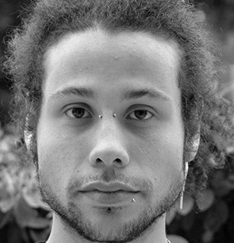
Grégory Gredat
Université Paris Sud
Summer 2012

Marie-Ève Delage
Université Laval
Winter 2013
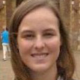
Alice Mizrahi
Université Paris Sud
Summer 2012
Fabrice Valade
Université de Sherbrooke
Winter 2012
Paul Calvert
Université Bishop
Summer 2010 - 2011
Sophie Dufour-Beauséjour
Université Laval
Summer 2011

Alexis Reymbaut
Université Paris Sud
Summer 2011
Gaël Grissonnanche
Université Paris Sud
Winter 2011
Vincent Bouliane
Université de Sherbrooke
Fall 2011
Maxime Rondeau
Université de Sherbrooke
Summer 2010
Simon Coudé
Université de Sherbrooke
Fall 2009
Benjamin Pingault
Université Paris Sud
Summer 2010
Samuel René de Cotret
Université de Sherbrooke
Fall 2008
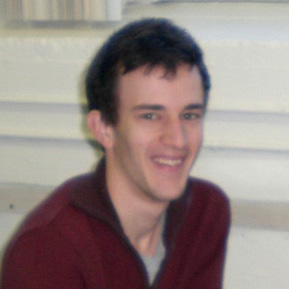
Ram Homier
Université de Sherbrooke
Winter 2008
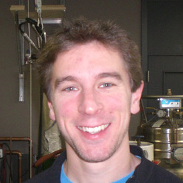
Francis Laliberté
Université de Sherbrooke
Fall 2007
Taras Dauzhenka
Belarus State University
Fall 2007
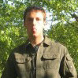
Victor Baledent
France
Winter 2007
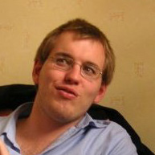
Alain Cano
France
Fall 2007
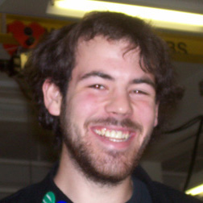
Dominique Boisvert
Université de Sherbrooke
Fall 2006
Carlos Pas-Soldan
Université de Sherbrooke
Summer 2006
Mark Ilton
Université de Sherbrooke
Summer 2006
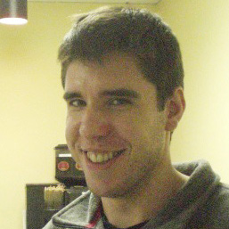
Alexandre Payeu
Université de Sherbrooke
Winter 2006
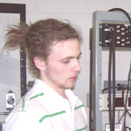
Jean-François Morissette
Université de Sherbrooke
Fall 2005
Ryan Arsenaul
Université de Sherbrooke
Summer 2005
Nicolas Wipf
Université de Sherbrooke
Summer 2005
David Le Boeuf
France
Winter 2005
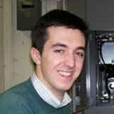
Jean-Baptiste Bonnemaison
Université de Sherbrooke
Winter 2005
Dominic Lepage
Université de Sherbrooke
Fall 2004
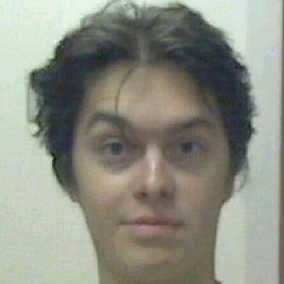
Jasmin Dufour
Université de Sherbrooke
Summer 2004
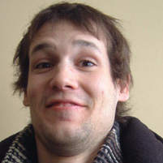
Sylvain Bédard
Université de Sherbrooke
Summer 2004
Alexandre Tremblay
Université de Sherbrooke
Winter 2004
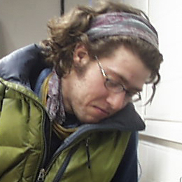
Shawn Young
Université de Sherbrooke
Winter 2004
Martin Pellerin
Université de Sherbrooke
Fall 2003
Dominic Lepage
Université de Sherbrooke
Fall 2003
Hugo Drouin-Vaillancourt
Université McGill
Summer 2003
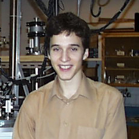